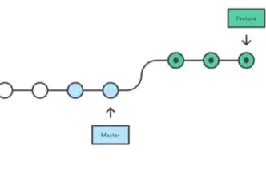
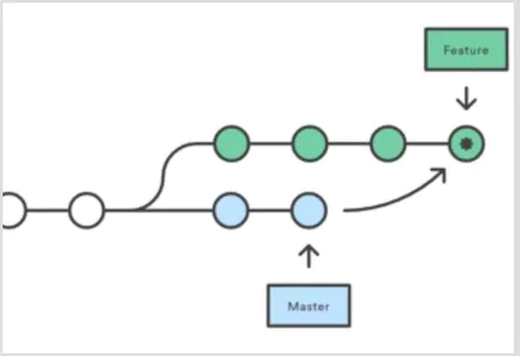

Git
# 工作区、暂存区

# 工作区
包括新建文件、对已存在文件的修改
新建文件是Untracked files，对已存在文件的修改是Changes not staged for commit
用git status可以查看：
$ git status
On branch master
Changes not staged for commit:
(use "git add <file>..." to update what will be committed)
(use "git checkout -- <file>..." to discard changes in working directory)
modified: readme.txt
Untracked files:
(use "git add <file>..." to include in what will be committed)
LICENSE
no changes added to commit (use "git add" and/or "git commit -a")
2
3
4
5
6
7
8
9
10
11
12
13
14
# 暂存区
使用git add将工作区内容添加到暂存区（stage），状态变为Changes to be committed
$ git status
On branch master
Changes to be committed:
(use "git reset HEAD <file>..." to unstage)
new file: LICENSE
modified: readme.txt
2
3
4
5
6
7
注意：所有的修改都要经过git add才会进入暂存区，git add之后的修改不会进入暂存区
再通过git commit就可以一次性把暂存区的所有修改提交到分支
# Q：工作区文件不想放入暂存区，如何丢弃？
git checkout -- .
# 等价于
git restore .
2
3
# 拉取
git pull
# 查看状态
git status
# 添加
添加指定文件：
git add <文件路径>
将当前路径下所有文件添加到git跟踪记录（track）：
git add .
# 删除
从git跟踪中删除某个文件
git rm <文件路径>
# 提交
把暂存区的所有修改提交到分支，带参数m，表示这次提交的message：
git commit -m "init"
# Q：如何给文件重命名？
先将文件a.png改名为b.png，此时git status显示a.png 状态为deleted
再用git add将b.png加入暂存区，此时git status显示状态为renamed，提交即可。
# 撤销修改
将文件从工作区或暂存区撤回
git checkout -- <文件名>
注意：若文件已提交到分支，即commit，用checkout也无法撤销
# 推送
把本地提交推送到远端
git push
默认将当前分支推到origin，完整写法：
git push origin <分支名>
# 撤回
# git reset
用于回退版本，可以遗弃不再使用的提交。
带参数hard和soft
hard：强行回退到指定版本，放弃当前任何修改：
git reset --hard <commit_id>1soft：不删除工作空间改动代码，不撤销暂存区（git add添加的文件），只撤销commit
git reset --soft <commit_id>
mixed(默认)：默认的时候，只有暂存区变化
git reset1
# git revert
与git reset用法基本一致，撤销某次操作，此次操作之前和之后的 commit 和 history都会保留，并且把这次撤销，作为一次最新的提交。
撤销某个版本：
git revert <commit_id>
撤销前一个版本，可以通过如下命令：
git revert HEAD
# 区别
| reset | revert | |
|---|---|---|
| 作用 | 重设本地更改 | 撤销远端的提交（已经push） |
| HEAD | 往后回滚 | 继续向前移动，只是新的commit内容与之前正好相反 |
# 查看记录
git log
带参数，展示分支合并图
git log --graph --pretty=oneline --abbrev-commit
* cf810e4 (HEAD -> master) conflict fixed
|\
| * 14096d0 (feature1) AND simple
* | 5dc6824 & simple
|/
* b17d20e branch test
* d46f35e (origin/master) remove test.txt
* b84166e add test.txt
* 519219b git tracks changes
* e43a48b understand how stage works
* 1094adb append GPL
* e475afc add distributed
* eaadf4e wrote a readme file
2
3
4
5
6
7
8
9
10
11
12
13
14
# 分支
分支之间的跳转，需要保证该分支下工作区、暂存区与分支提交相同，无修改：即git diff HEAD 无差异；否则在分支跳转时会出现报错情况，无法跳转
分支跳转完成后后，工作区目录会恢复到当前分支最近一次提交下的目录情况，即不同分支底下的目录内容即便存在差异，也不会互相干扰泾渭分明。
# 查看分支
查看当前所有分支：
git branch
# 创建分支
git branch <分支名>
# 切换分支
最新版本git提供switch命令，不用再和checkout混淆
git switch <分支名>
# 创建+切换分支
创建dev分支，然后切换到dev分支：
git switch -c dev
# 删除分支
git branch -d <分支名>
# 合并
有两种方式：merge和rebase
# git merge
合并指定分支到当前分支
git merge <分支名>
例如当前在master分支，要将dev分支合并到master：
$ git merge dev
Updating d46f35e..b17d20e
Fast-forward
readme.txt | 1 +
1 file changed, 1 insertion(+)
2
3
4
5
注意Fast-forward信息，Git告诉我们，这次合并是“快进模式”，也就是直接把master指向dev的当前提交，所以合并速度非常快。不是每次合并都能Fast-forward
常用合并方式
#先切到开发分支，并拉到最新
git checkout develop
git pull origin develop
#再切回主分支，并拉到最新
git checkout master
git pull origin master
#使用--no-ff命令合并，并填写信息
git merge develop --no-ff -m "merge dev to master"
#提交
git commit -m "develop merge to master"
git push origin master
2
3
4
5
6
7
8
9
10
11
加上--no-ff参数就可以用普通模式合并，合并后的历史有分支，能看出来曾经做过合并，而fast forward合并就看不出来曾经做过合并。
# git rebase
中文翻译变基，主要作用是把本地未push的分叉提交历史整理成直线，使查看历史提交的变化时更容易。
rebase：

merge：
举例
在和远程分支同步后，我们对hello.py这个文件做了两次提交。用git log命令看看：
$ git log --graph --pretty=oneline --abbrev-commit
* 582d922 (HEAD -> master) add author
* 8875536 add comment
* d1be385 (origin/master) init hello
* e5e69f1 Merge branch 'dev'
|\
| * 57c53ab (origin/dev, dev) fix env conflict
| |\
| | * 7a5e5dd add env
| * | 7bd91f1 add new env
...
2
3
4
5
6
7
8
9
10
11
注意到Git用(HEAD -> master)和(origin/master)标识出当前分支的HEAD和远程origin的位置分别是582d922 add author和d1be385 init hello，本地分支比远程分支快两个提交。
尝试推送本地分支到远端：git push origin master。报失败
原因是别人先于我们推送分支到远端。应该先pull一下，再用git status看看状态：
$ git status
On branch master
Your branch is ahead of 'origin/master' by 3 commits.
(use "git push" to publish your local commits)
nothing to commit, working tree clean
2
3
4
5
6
加上刚才合并的提交，现在我们本地分支比远程分支超前3个提交。git log查看：
$ git log --graph --pretty=oneline --abbrev-commit
* e0ea545 (HEAD -> master) Merge branch 'master' of github.com:michaelliao/learngit
|\
| * f005ed4 (origin/master) set exit=1
* | 582d922 add author
* | 8875536 add comment
|/
* d1be385 init hello
...
2
3
4
5
6
7
8
9
可以看到从"init hello"开始，有人和我们同时进行了提交，我们提了"author"和"comment"两个，对方提了"set exit=1"，发生分叉。
此时如果先用git rebase进行合并，再git log查看
$ git log --graph --pretty=oneline --abbrev-commit
* 7e61ed4 (HEAD -> master) add author
* 3611cfe add comment
* f005ed4 (origin/master) set exit=1
* d1be385 init hello
...
2
3
4
5
6
发现原本分叉的提交变成一条直线，我们的修改不再基于"init hello"，而是基于对方提交的"set exit=1"。
现在就能成功push，再查看git log：
$ git log --graph --pretty=oneline --abbrev-commit
* 7e61ed4 (HEAD -> master, origin/master) add author
* 3611cfe add comment
* f005ed4 set exit=1
* d1be385 init hello
...
2
3
4
5
6
# 比较
查看工作区的某文件和最新版本的区别
git diff HEAD -- <文件名>
# .gitignore
该文件放在git项目根目录下，告诉git忽略对哪些文件的跟踪。注意该文件的生效对象仅限于未加入stage的文件，若已加入stage（即git add），则不起效。应该先将要忽略的文件unstage，此后gitignore就生效，再使用add会忽略指定的文件。